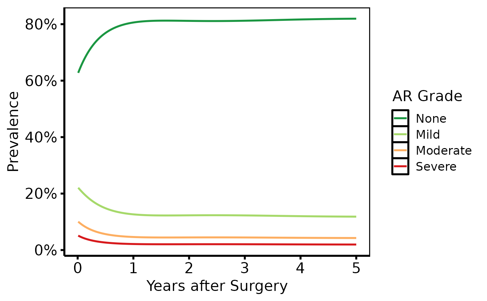
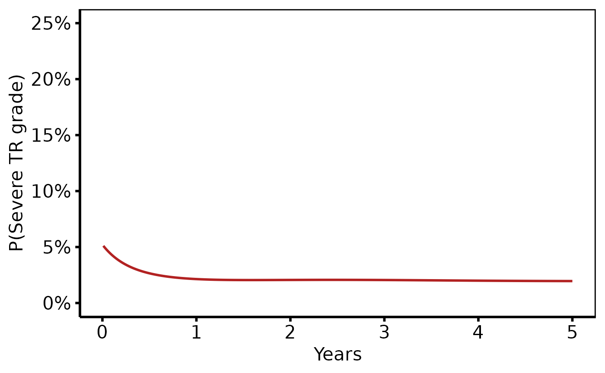

Draws grade-specific probability curves with an optional binned data summary point overlay.
Usage
# S3 method for class 'hv_ordinal'
plot(x, line_width = 1, point_size = 2.5, point_shape = 20L, ...)Value
A bare ggplot object.
Examples
dat <- sample_nonparametric_ordinal_data(
n = 800, time_max = 5,
grade_labels = c("None", "Mild", "Moderate", "Severe")
)
# Curves only, with RColorBrewer palette
plot(hv_ordinal(dat)) +
ggplot2::scale_colour_brewer(palette = "RdYlGn", direction = -1,
name = "AR Grade") +
ggplot2::scale_x_continuous(breaks = 0:5) +
ggplot2::scale_y_continuous(labels = scales::percent) +
ggplot2::labs(x = "Years after Surgery", y = "Prevalence") +
hv_theme("poster")

# Subset: show only severe grade
plot(hv_ordinal(dat[dat$grade == "Severe", ])) +
ggplot2::scale_colour_manual(values = c(Severe = "firebrick"),
guide = "none") +
ggplot2::scale_y_continuous(limits = c(0, 0.25),
labels = scales::percent) +
ggplot2::labs(x = "Years", y = "P(Severe TR grade)") +
hv_theme("poster")
